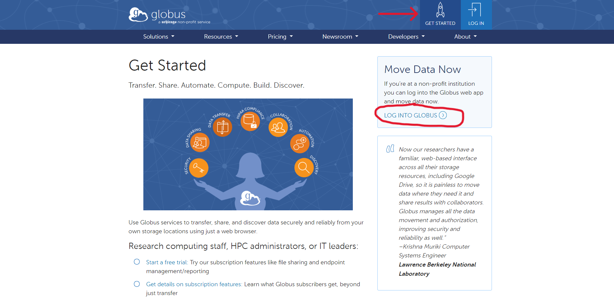
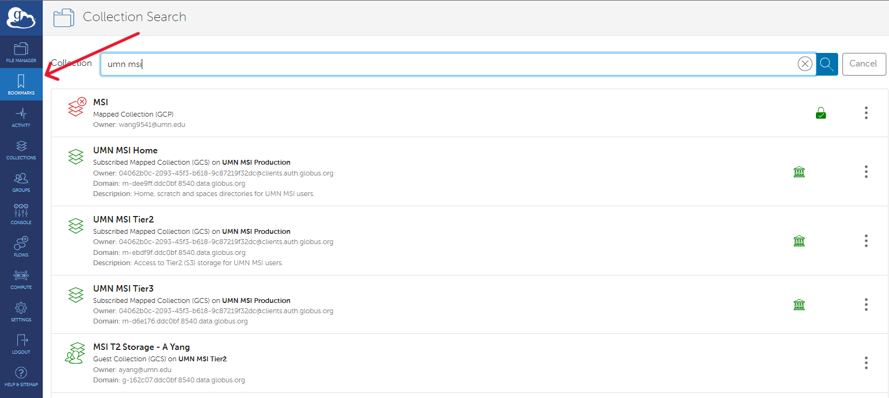
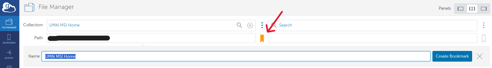

Getting started with Globus
If you are with a non-profit institution, you can log in and get started moving data instantly, for free.
Logging in for the first time
- Navigate to globus.org
- In the top right corner, click on "Get Started"
- On the right side under "Move Data Now" click "Log into Globus"

- Search for your institution, then follow the prompts to log in with your institutional credentials.
Transferring Data
Follow this link to learn more about using Globus to transfer data to MSI.
Globus Connect Personal
Globus Connect Personal is a downloadable application that will create an endpoint on your local drive and allow you to easily transfer files back and forth. To download Globus Connect Personal, please follow this link.
Adding Bookmarks
Bookmarks are useful for quickly navigating to frequently used file paths.
To add a bookmark:
- After you've logged in you'll be brought to the "File Manager" screen
- Navigate to the "Bookmarks" tab on the left-side menu
- Some destinations can be searched for by name (i.e. the Tier 1 storage at MSI), while others may require a direct file path

- Select the intended file path
Note
Bookmarking Tier 1 storage requires you to log in and authenticate your MSI credentials. You must already have a MSI account to do this.
- Click "Continue" and follow the prompts to log in with your credentials.
- Once back in the "File Manager" tab, in the middle of the transfer box click the bookmark icon

- You can rename the path if you would like, then click "Create Bookmark"
- To see your bookmarks, navigate to "Bookmarks" tab on the left-side menu. From here you can click on your saved bookmarks to quickly navigate to different directories